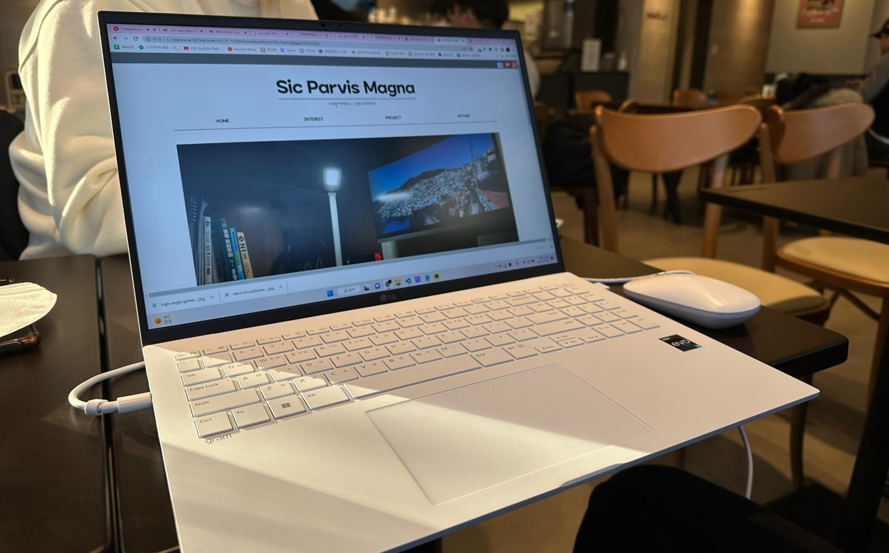

여태껏 이루어 낸 것들, 쌓아 놓은 것들을 게시합니다.

각종 WEB강좌들을 보며 나 자신을 소개하는 페이지를 만들자! 라고 생각하며 시작했습니다.
뚜렷하게 나타나는 결과물로 인해 자신감도 점점 상승했지만, 내가 원하는 것을 만들기 위해서, 내 의도를 정확하게 구현해내기 위해서
상당히 많은 노력이 필요했습니다. 또한, '왜 이게 안될까?' 라는 질문과 고민을 거듭하며 코딩 실력이 한 단계 올라간 느낌이라 즐겁기도 하였습니다.
무엇보다, '나 자신'에 대한 소재였기에 만들면서 한 번도 지루하다는 생각이 들지 않았습니다. 정말 재미있게 한 것 같습니다.
CONTACTS
- E-MAIL : wsw1407@naver.com
- KakaoTalk : https://open.kakao.com/o/syE9jtXe>
- Instagram : @delt4fr0g